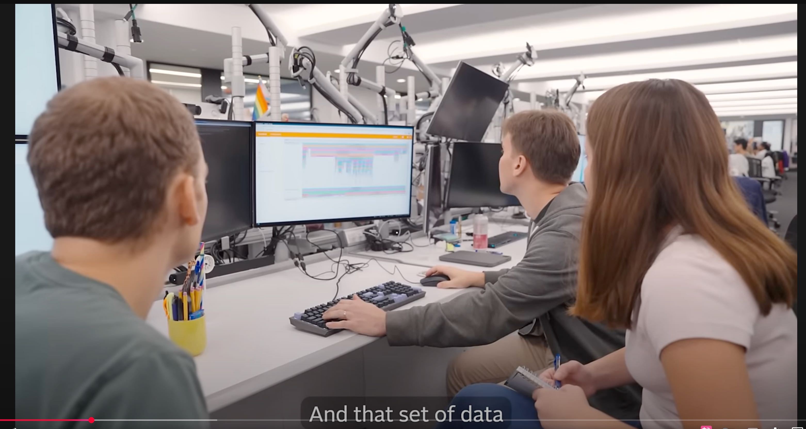
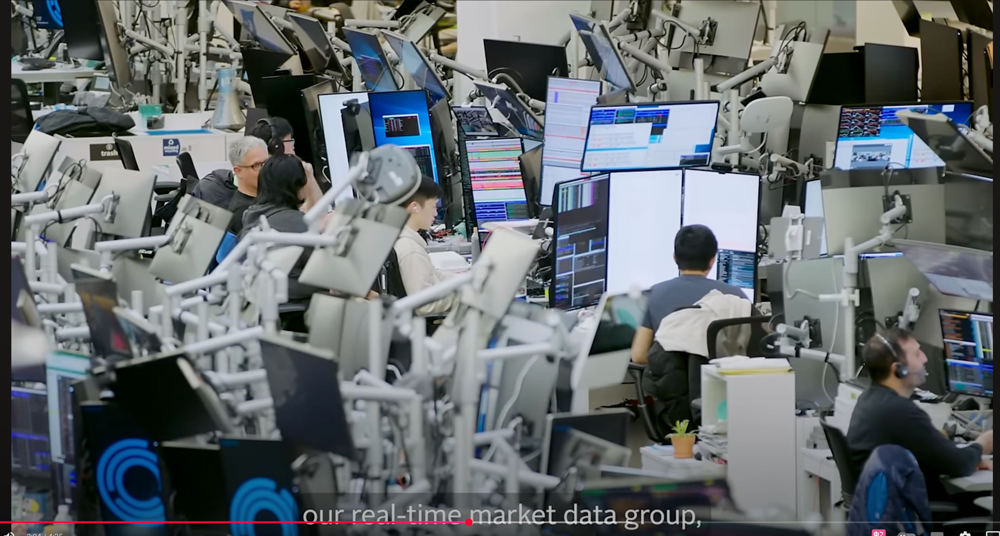
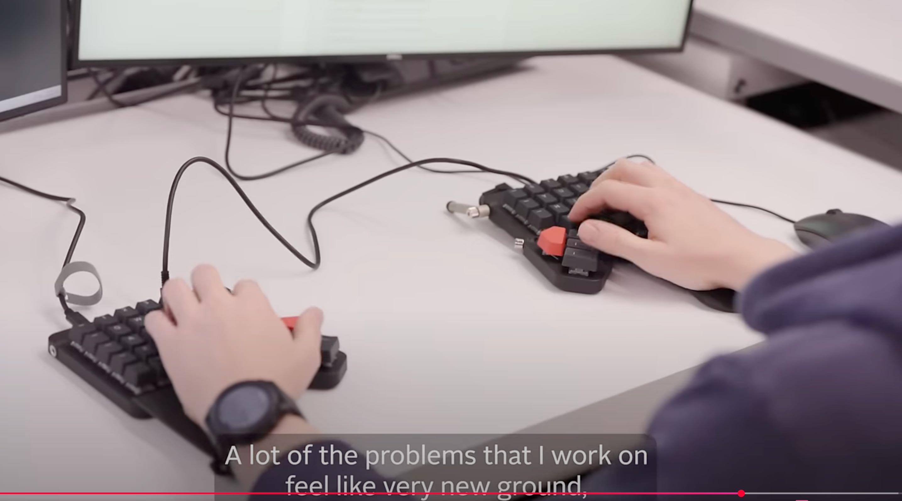

网络文章@202508
每个工位都有支架，可以放置4个monitors.. 感觉JS真是豪气。
(24) Meet the Machine Learning Team at Jane Street - YouTube



做那些无法规模化的事（2013） | 极客新闻 — Do Things That Don't Scale (2013) | Hacker News
Something I heard recently on some podcast which really resonated was (paraphrasing): "Inertia is the biggest issue for a startup. The world doesn't like you, doesn't think it needs you… and you've got to invert that. You have to create momentum by scratch and the most important thing a founder does, by an order of magnitude, is invert inertia. Literally, in a physical sense. Like the world stays at rest and you've got to create momentum." With that in mind, it makes sense to do things that don't scale… because in the beginning, you're not trying to optimize a machine that's already running. You're trying to get the engine to turn over at all. PG's point is that scalable growth comes later; first, you have to manually crank the thing into motion. You do manual stuff not because it's efficient, but because it's the only way to get traction when no one's looking for you in the first place. And that's how you learn what actually works, how you build momentum one user at a time, and how you prove there's something worth scaling at all.
最近在某个播客中听到的一句话让我深有感触（大致意思是）：“惯性是初创企业面临的最大问题。世界并不喜欢你，也不认为需要你……而你必须扭转这种局面。你必须从零开始创造势头，而创始人所做的最重要的事，其重要性高出几个数量级，就是扭转惯性。字面意义上的，在物理层面上。就像世界处于静止状态，而你必须创造动量。”基于此，做一些不具备可扩展性的事情是有意义的……因为在初期，你不是在优化一个已经运行的机器。你是在努力让引擎启动。PG 的观点是，可扩展的增长会来得更晚；首先，你必须手动启动这个过程。你做这些手动工作不是因为它们高效，而是因为在没人关注你的时候，这是唯一能获得 traction 的方式。而这就是你如何学习什么真正有效、如何一步步积累动量、以及如何证明这值得扩展的途径。
=======
I also think that the biggest value in doing things manually is that you actually learn. 我认为，手动操作的最大价值在于，你确实能够从中学习。 One of my clients used to make a nice curated list of the important financial and stock market news of the week, it was a niche part of a niche product but people loved it. 我的其中一位客户曾经每周整理一份精选的金融和股市新闻列表，虽然这是个小众产品中的一个小众部分，但深受用户喜爱。
At some point he thought about automating everything, it became less curated, more spammy, it lost any value and in the end so did the product. Sure there was more news, but it was less curated, edited and the signal to noise ratio got worse. 在某个阶段，他曾考虑过将一切自动化，但结果变得越来越不精心策划，充斥着垃圾信息，失去了任何价值，最终产品也随之衰落。虽然新闻内容更多了，但缺乏精心策划和编辑，信息噪音比越来越高。
In fact what they did manually was more valuable even if the scope was smaller. 事实上，他们手动完成的工作即使范围较小，其价值也更高。
Many companies don't understand that and rush into premature optimization. 许多公司并不明白这一点，因此急于进行过早的优化。
I'll have another example: one of my clients wanted a scraper to automate something his company needed to do manually: check competitors prices on their ecommerces. 我再举一个例子：我的一个客户需要一个爬虫工具来自动化他公司手动完成的一项任务：检查竞争对手在电商平台上的价格。
I built it, way simpler than they wanted (they thought they wanted an app with a proper front end, turns out it was better for both to produce an excel spreadsheet with the data) and they were happy. 我开发了这个系统，比他们要求的简单得多（他们原本以为需要一个带有完整前端界面的应用程序，结果发现生成一个包含所有数据的 Excel 表格更适合双方）。他们对结果非常满意。
Then after some time they understood that they were missing part of the experience: navigating their competitors manually allowed them to see new approaches to show the catalogue, new trends and products, they were actually learning from the competition. 过了一段时间，他们逐渐意识到自己错过了体验的一部分：手动浏览竞争对手的产品目录，让他们能够发现展示目录的新方法、新趋势和新产品，实际上他们正在从竞争对手那里学习。
Eventually they realized and got back to doing it, and left my scraper just for price analysis. 最终，他们意识到了这一点，并重新开始做原来的工作，而我的数据抓取工具则仅用于价格分析。
But the overwhelming majority of my clients keep putting automation before the product and problem and misses important learning opportunities. 但绝大多数客户仍然将自动化置于产品和问题之前，从而错失了重要的学习机会。
晴朗的日子温暖宜人：为何领英奖励平庸 | 黑客新闻 — Sunny days are warm: why LinkedIn rewards mediocrity | Hacker News
This reads like it was written by a developer 'who doesn't get marketing'. 这段文字读起来像是由一位“不懂营销”的开发人员撰写的。
Nothing you post there is going to change your career. 你在那里发布的任何内容都不会改变你的职业生涯。
I can attribute millions of dollars in revenue to LinkedIn, as can a lot of my 'LinkedIn friends' 我可以将数百万美元的收入归功于 LinkedIn，我的许多“LinkedIn 好友”也是如此。
Doing work that matters might. 从事有意义的工作或许。
This is a pre-requisite for winning on LinkedIn. The kind of content that performs best are strong opinions informed by actual expertise. 这是在 LinkedIn 上取得成功的前提条件。表现最佳的内容是基于实际专业知识的有力观点。
Go for depth over frequency. 追求深度而非频率。
Unfortunately that's not the way marketing works. 95% of your audience is not 'in-market' and ready to buy when they see your content. Sometime over the next 3-5 years they may move into a buying lifecycle, and they are much more likely to trust you, and therefore buy from you, if they've seen your content 1,000x vs a couple of long reads. 遗憾的是，营销并非如此运作。当你的受众看到你的内容时，其中 95%的人并不处于“购买阶段”且准备好立即购买。在未来 3 到 5 年内，他们可能会进入购买生命周期，而如果他们之前已经看过你的内容 1000 次，相比于只看过几篇长文，他们更可能信任你，并因此选择从你这里购买。
If writing online matters to you, you’re probably better off starting a blog and building things there. 如果你重视在线写作，那么你最好还是从创建一个博客开始，并在那里逐步构建内容。
Your long form, in-depth content lives on your blog, and your LinkedIn profile should act as a funnel, moving people from newsfeed –> your profile –> the most important piece of content you want them to read. From there, you can capture their email to touch them on another channel (inbox), push them to your YouTube / Twitter / community, etc. 您的长篇深度内容发布在博客上，而您的 LinkedIn 个人资料应作为一个引导渠道，将用户从动态信息流引导至您的个人资料，再进一步引导至您希望他们阅读的最重要内容。从那里，您可以收集他们的邮箱地址，以便通过其他渠道（如邮箱）与他们保持联系，或引导他们前往您的 YouTube、Twitter 或社区等平台。
With that said, while LinkedIn is responsible for a significant % of my total revenue, it's also responsible for a significant % of my anxiety. Building in public invites folks to publicly blast you if they don't agree with your ideas. 'Getting ratio'd' happens. LinkedIn eventually becomes a mentally exhausting slog. But as a career driven individual the upside has been very high and I think the trade off was worth it. I would do it again knowing everything I know now. 话虽如此，尽管 LinkedIn 占了我总收入的相当大比例，它也占了我焦虑的相当大比例。在公开平台上建立人脉意味着，如果有人不同意你的观点，他们可以公开批评你。被“点赞比”打压的情况时有发生。LinkedIn 最终会变成一项令人精疲力尽的任务。但作为一个以职业为导向的人，回报非常高，我认为这种权衡是值得的。如果现在让我重新选择，我仍然会这样做。
高管应该是最不忙的人。 — Executives should be the least busy people
If your executive calendar is packed back to back, you have no room for fires, customers, or serendipities. You've traded all your availability for efficiency. That's a bad deal. 如果你的高管日程表排得满满当当，连喘息的余地都没有，那就意味着你没有时间应对突发事件、客户需求或意外机遇。你已经用所有的空闲时间换取了效率。这笔交易并不划算。
Executives of old used to know this! That's what the long lunches, early escapes to the golf course, and reading the paper at work were all about. A great fictional example of this is Bert Cooper from Mad Men. He knew his value was largely in his network. He didn't have to grind every minute of every day to prove otherwise. His function was to leap into action when the critical occasion arose or decision needed to be made. 老一辈的 executives 都深谙此道！那便是为何他们总爱在午餐时长谈、提前逃离办公室去高尔夫球场，或是工作时阅读报纸。一个经典的虚构例子便是《广告狂人》中的伯特·库珀。他深知自己的价值主要在于人脉网络。他无需每天每分每秒地拼命工作来证明自己。他的职责是在关键时刻果断行动，或是做出重要决策。